Your picks from the interview, on Samara's real bar. Where you asked to see options, each one is here side by side.
The lantern at the far left
The lantern takes the place of the ... menu and the crest spot at the start of the bar.
Today
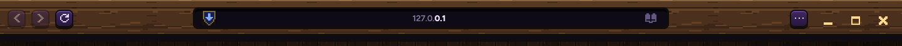
The lantern as the crest
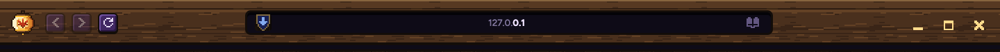
What fills the empty wood
Leave it emptyA shorter bar
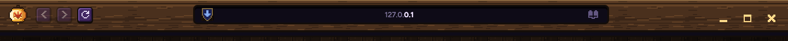
Your sites as keys after Reload
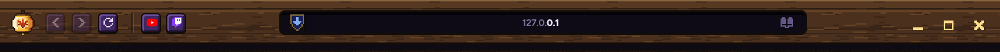
A wider address bar
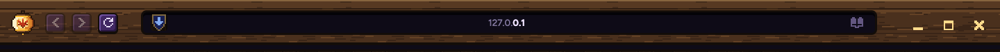
The address bar's shape
Shown at 2x so the corners are clear.
Soft (today)
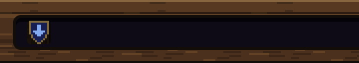
Round
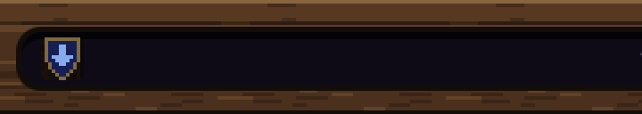
Pill
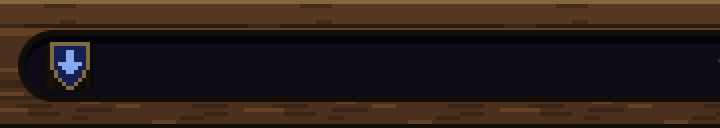
How the lantern's menu opens
Drops down from the lantern
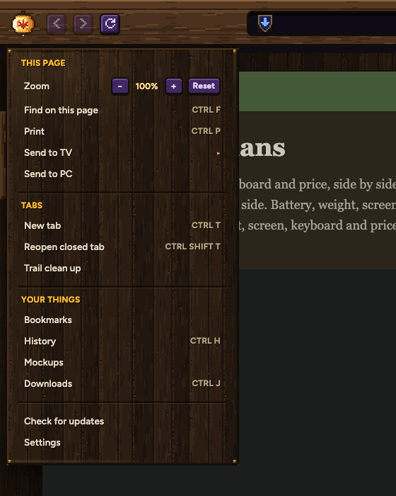
Opens as a game panel
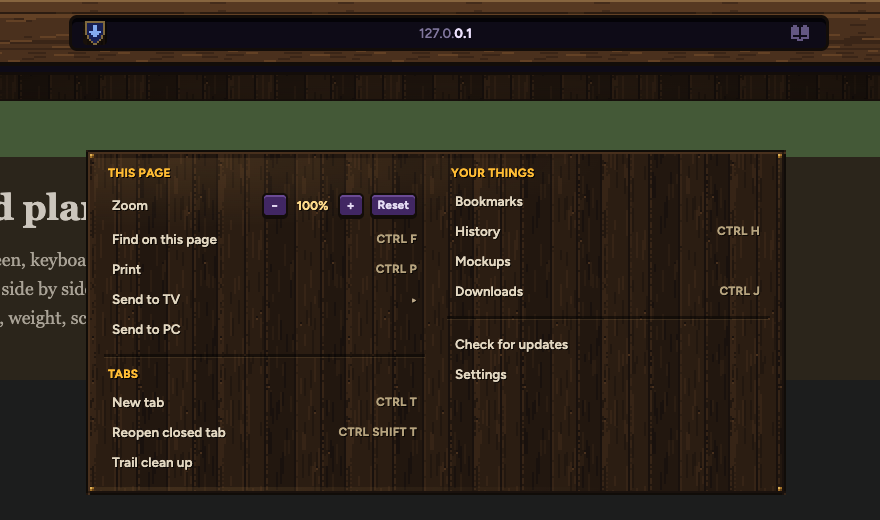
Claude at work
No words in the bar. The address bar gives off light in the rune's colour, drawn in pixel steps, and breathes slowly while you watch Claude's tab.
Breathing
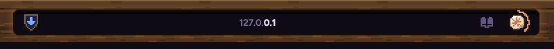
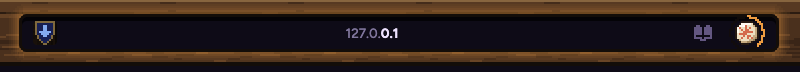
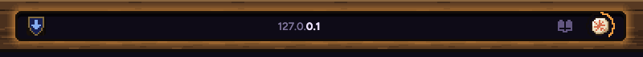
DimBrightest
Click the rune: Stop is in its panel
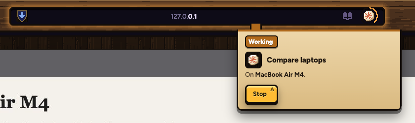
When Claude needs you, the light turns blue
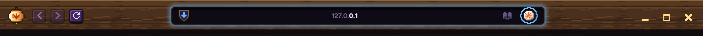
Notices: one family for all of Samara
Every notice and every Claude ask uses the same plate and the rune's colours. One shows at a time, with a count. Only Needs your OK makes a sound. Done stays until you press Got it.
Today: a plain note under the bar
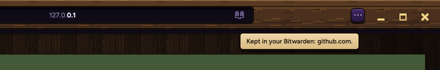
Done
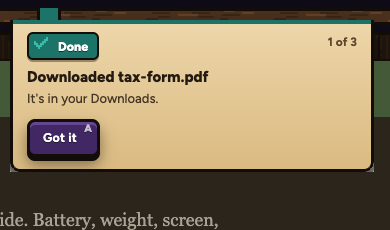
Needs your OK
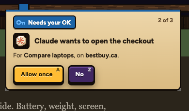
Went wrong
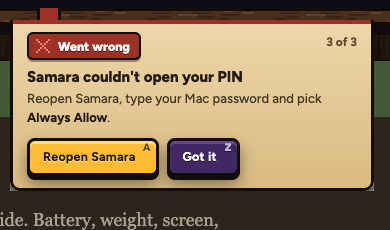
Where they hang
From the lantern
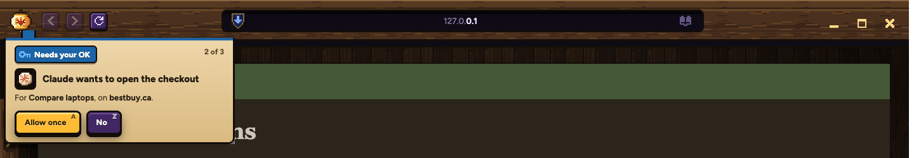
From the address bar
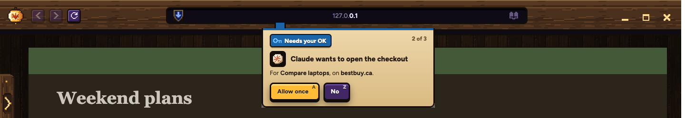
From the window keys
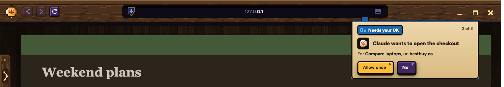
Or a text box at the bottom
The other feel: a game text box in the menu's wood frame, at the bottom of the window.
Needs your OK
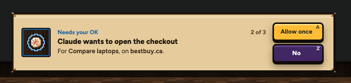
Done
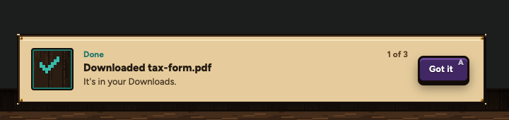
Went wrong
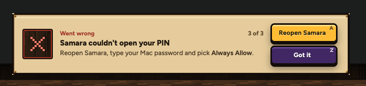
Every notice Samara shows today, sorted
Samara's real lines, each given its colour.
Done
Downloaded tax-form.pdf to your Downloads.
Kept in your Bitwarden: github.com.
Home page saved.
This page is your home page now.
Brought in 40 bookmarks. The bar ones are on the shelf in the drawer.
Closed Compare laptops and its 3 tabs. (with Undo)
Compare laptops is in the Stash.
Removed 2 duplicates.
Netflix would not play in this tab, so it opened in the video window.
Needs your OK
Every Claude ask (Allow once or No)
Link Samara to your TV (the TV's code)
Bitwarden wants your master password again.
Five wrong PINs: Bitwarden needs your master password again.
Sign in to Bitwarden once first, yourself.
Safari keeps its bookmarks private. Turn on Aang under Full Disk Access, then press this again.
Went wrong
Samara couldn't open your PIN. Reopen Samara, type your Mac password and pick Always Allow.
tax-form.pdf did not finish downloading.
Your TV didn't wake up. (Try again, Send window)
Bitwarden did not answer. Try the key again.
Bitwarden did not keep it. Try again from the key.
No saved login for bestbuy.ca in your Bitwarden.
No login box found on this page to fill.
Chrome didn't open. Open your bank there yourself.
That is not a web address.
Lines to fix while we're in there
Not sure which colour: "A popup tried to open a site on the fake-site lists. It was closed." and "A website tried to open an address on your home network." Samara stopped something. Done, or Went wrong?
Says PC on the Mac: "Bitwarden's tool is not on this PC yet."
Old names: "The whole window" in the TV notes is now Send window. "Mockups in the ... menu" becomes the lantern.